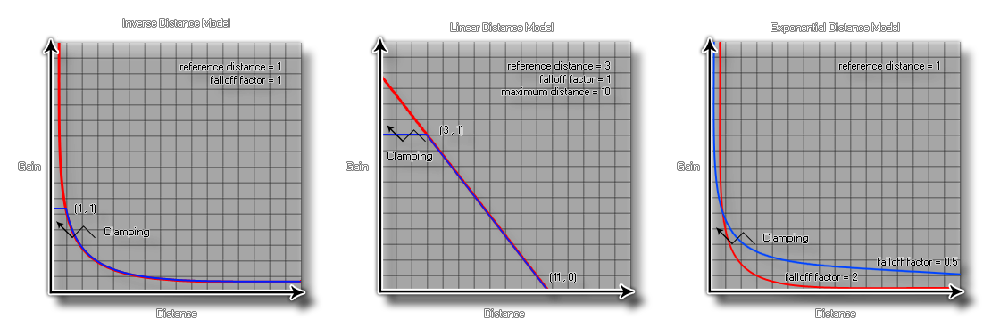

Para agregar más versatilidad al motor de audio, GameMaker Studio 2 le permite seleccionar el modelo de caída que mejor se adapte a su juego. Este modelo se usará para todas las funciones de audio en el juego o la aplicación, por lo que debe asegurarse de que el modelo que elija sea el correcto, ya que cada uno afectará la forma en que el oyente perciba los sonidos que toca a través de los emisores o con el función audio_play_sound_at.
Al configurar la caída en su juego con las funciones apropiadas hay tres argumentos que necesitará establecer, y cada uno es apropiado para un modelo específico y afectará la forma en que el sonido final "es escuchado" por el jugador dependiendo de la distancia que el oyente es de la fuente. Los tres argumentos son:
- distancia de referencia: esta es la distancia del oyente a la distancia bajo la cual el volumen del sonido reproducido caería normalmente a la mitad antes de ser influenciado por el factor de caída o la distancia máxima especificada.
- distancia máxima - esto establece la distancia donde ya no habrá ninguna atenuación del sonido de la fuente. Este puede ser el punto en el que el sonido ya no se escucha o el punto en el que el volumen del sonido ya no disminuye por debajo del umbral mínimo definido por el modelo elegido.
- Factor de caída: el factor de disminución se utiliza en la atenuación de distancia en función del modelo de distancia inversa y establece el umbral mínimo final para un sonido con caída.
Los modelos de caída que se ven afectados por estos argumentos están representados en GameMaker Studio 2 por las siguientes constantes (la tabla muestra los cálculos exactos utilizados también):
Constante Función audio_falloff_exponent_distance
gain = (listener_distance / reference_distance) ^ (-falloff_factor)audio_falloff_exponent_distance_clamped
distance = clamp (listener_distance, reference_distance, maximum_distance)
gain = (distance / reference_distance) ^ (-falloff_factor)audio_falloff_inverse_distance
gain = reference_distance / (reference_distance + falloff_factor * (listener_distance - reference_distance))audio_falloff_inverse_distance_clamped
distance = clamp (listener_distance, reference_distance, maximum_distance)
gain = reference_distance / (reference_distance + falloff_factor * (distance - reference_distance))audio_falloff_linear_distance
distance = min (distance, maximum_distance)
gain = (1 - falloff_factor * (distance - reference_distance) / (maximum_distance - reference_distance))audio_falloff_linear_distance_clamped
distance = clamp (listener_distance, reference_distance, maximum_distance)
gain = (1 - falloff_factor * (distance - reference_distance) / (maximum_distance - reference_distance))audio_falloff_none
ganancia = 1
Los siguientes gráficos son representaciones visuales de cómo funcionan las constantes anteriores y afectan el sonido que se está reproduciendo: 
audio_falloff_set_model(model);
| Argumento | Descripción |
|---|---|
| model | La constante utilizada para establecer el modelo de caída. |
N/A
audio_falloff_set_model(audio_falloff_exponent_distance_clamped);
audio_play_sound_at(snd_Waterfall, x, y, 0, 100, 300, 1, true,
1);
El código anterior establece el modelo de caída y luego reproduce el sonido indexado en la variable "snd_Waterfall", que se colocará en bucle en su posición de habitación, con una referencia de caída de 100, una distancia de caída de 300, un factor de caída de 1 y una baja prioridad.